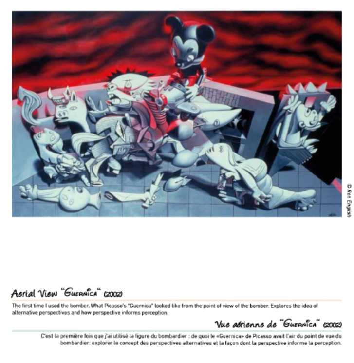

Exhibitions
Guernica, Allouche Gallery, New York, New York, US, September 23–October 19, 2016.
Reimagining “Guernica” / La réinvention du “Guernica”, Museo de la Paz de Gernika, Gernika-Lumo, Bizkaia, Spain, April 4–December 10, 2017.
Literature
Ron English, Original Grin: The Art of Ron English (Paris: Cernunnos, 2019), p. 208. ISBN 978-2374950938.
Notes
Also known as Fly by Reich.
This work appears in the Museo de la Paz de Gernika’s digital exhibition catalogue / flip-book, available here, accessed April 5, 2026.
In Original Grin, this work was erroneously reported as 24 × 56 inches.
This work references Pablo Picasso’s Guernica.

Ancillary Documentation
